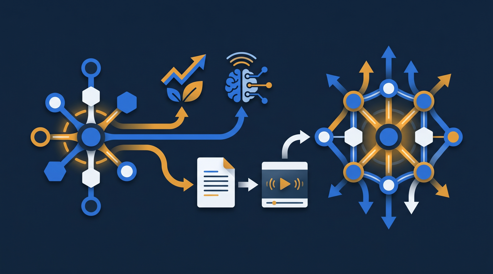
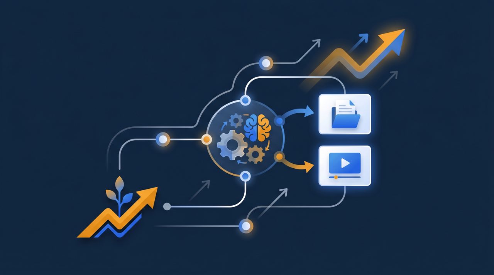

「採用してもすぐ辞めてしまう」「せっかく育てた人材が定着しない」——多くの企業が抱えるこの悩みは、待遇や人間関係だけが原因とは限りません。早期離職の理由を尋ねると、「成長できる実感がない」「入社後に放置された」という声が目立ちます。つまり、教育のあり方が定着を左右している面があるわけです。この記事では、研修と離職防止がどうつながっているのか、そして社員の定着につながる教育施策を、現場と経営の両面から整理します。

なぜ「教育」が離職に関わるのか
まず、研修や教育が離職とどうつながっているのかを整理しておきましょう。一見すると別の話に思えるかもしれませんが、実は深く関わっています。
人が会社を辞める理由はさまざまです。給与や労働時間といった待遇、上司や同僚との人間関係、仕事内容のミスマッチ。これらに加えて、近年とくに目立つのが「成長できる実感が持てない」という理由です。とくに若い世代では、この会社にいて自分は成長できるのか、という問いが、働き続けるかどうかの判断に大きく影響する傾向があります。
ここで教育が関わってきます。学ぶ機会がなく、何を身につければよいか分からないまま日々が過ぎていくと、成長の手応えを感じにくくなります。逆に、計画的に研修があり、できることが一つずつ増えていく実感があれば、「ここで成長できている」という納得が生まれます。厚生労働省の能力開発基本調査でも、企業による教育訓練や自己啓発の支援は、社員の能力開発の重要な要素として位置づけられていますが、それは同時に、社員が会社に居続ける動機にもなりうるわけです。
もう一つ大きいのが、入社直後の体験です。厚生労働省が公表している新規学卒就職者の離職状況を見ても、就職後の早い時期に離職が起きやすい傾向が示されています。入社して間もない時期に「放置された」「何をすればいいか分からなかった」と感じた経験は、その後の定着に影を落とします。最初のつまずきをどう支えるか——ここに教育の役割が大きく関わってくるんですね。
ここで少し、採用にかかったコストの視点も加えてみましょう。一人を採用するには、求人広告や面接、入社手続きなど、相応の費用と時間がかかっています。それなのに、入社後の受け入れがうまくいかずに早期離職されてしまうと、その投資はほぼ回収できないまま消えてしまいます。さらに、また一から採用をやり直すコストもかかる。つまり、教育を整えて定着を高めることは、採用への投資を無駄にしないという意味でも、経営に直結する話なんです。離職を「個人の都合」とだけ捉えず、受け入れや教育の仕組みに改善の余地がないかを見直すことが、結果的にコストを抑えることにつながります。
早期離職を招きやすい「入社後の放置」
離職防止を考えるうえで、特に注目したいのが入社直後の時期です。この時期の体験が、その人がこの会社で長く働くかどうかを大きく左右します。
入社直後は、誰もが期待と不安の両方を抱えています。新しい環境、知らない人たち、慣れない業務。そんな中で、十分な受け入れも説明もないまま現場に放り込まれると、どうなるでしょうか。何をすればよいか分からず、誰に聞けばいいかも分からない。質問するのも気が引けて、ただ時間だけが過ぎていく。こうした孤立感が、「ここでやっていけるのだろうか」という不安に変わり、早期離職の引き金になりやすいんです。

中小企業では、教える専任者を置けず、現場の先輩が忙しい中で片手間に教える、ということが起きがちです。先輩に悪気はなくても、忙しさのあまり新人が放置される時間が生まれてしまう。J-Net21などでも、中小企業の人材定着は重要なテーマとして取り上げられていますが、その出発点として、入社初期の受け入れをどう整えるかは見逃せない論点です。
ある飲食業の会社では、以前は新人が入っても、忙しい現場でほとんど教えられないまま放置され、数週間で辞めてしまうことが続いていたそうです。そこで、最初に見てほしい基本動作を動画にまとめ、入社初日にまず見てもらう仕組みに変えたところ、新人が「何をすればいいか分かる」状態で現場に立てるようになり、早期離職が減ったといいます。放置をなくすだけで、定着は大きく変わりうるわけですね。
定着につながる教育施策その1：オンボーディングを整える
では、具体的にどんな教育施策が定着につながるのでしょうか。まず取り組みたいのが、入社後の受け入れ、つまりオンボーディングを整えることです。
オンボーディングとは、新しく入った社員が職場に慣れ、戦力として立ち上がっていくまでの受け入れと育成のプロセスのことです。単に業務を教えるだけでなく、会社のルールや文化を知ってもらうこと、誰に何を聞けばよいかを示すこと、人間関係の橋渡しをすることなど、幅広い要素を含みます。
- 入社初日から数日で何を学ぶか、道筋を示しておく
- 基本的な業務やルールを、動画やマニュアルで自分で学べるようにする
- 誰に何を相談すればよいか、窓口を明確にする
- 一定期間ごとに面談を行い、不安や疑問を拾う
- 「できるようになったこと」を本人と確認し、成長を実感してもらう
ここで動画やeラーニングが力を発揮します。基本的な業務やルールを動画で学べるようにしておけば、先輩が忙しくても、新人は自分のペースで必要なことを学べます。分からなくなったら何度でも見返せるので、「同じことを何度も聞きづらい」という遠慮も減ります。誰がどこまで学んだかを記録できる仕組みがあれば、つまずいている人を早めに見つけてフォローすることもできますよね。受け入れを個人の善意に任せるのではなく、仕組みとして整えることが、放置をなくす近道です。
また、オンボーディングは「業務を教える」だけのものではない、という点も押さえておきたいところです。新人が抱える不安の多くは、業務そのものより、「この職場になじめるか」「困ったときに頼れる人がいるか」という人間関係や居場所に関わるものだったりします。だからこそ、最初の数週間で、上司や先輩と話す機会を意図的に設けることが効いてきます。短い面談でも「困っていることはない？」と一言かけるだけで、新人の孤立感はずいぶん和らぎます。動画やeラーニングで業務の土台を支えつつ、人と人との接点は人が担う。この役割分担ができると、受け入れの質がぐっと上がるんです。
定着につながる教育施策その2：成長の道筋を示す
オンボーディングで最初のつまずきを支えたら、次は中長期の定着につながる施策です。それが、成長の道筋を示す研修です。
人が働き続ける動機の一つに、「この先、自分はどう成長できるのか」という見通しがあります。今の仕事を覚えた先に、どんなスキルが身につき、どんな役割を任されるようになるのか。その道筋が見えると、目の前の仕事にも意味を感じやすくなります。逆に、何年たっても同じことの繰り返しで、先が見えないと感じれば、人は外に成長の機会を求めて離れていきがちです。
だからこそ、研修を「今の業務を回すため」だけでなく、「将来につながる学び」として設計することが大切です。たとえば、基本業務を習得した人に、次のステップとして応用的なスキルやマネジメントの学びを用意する。資格取得につながる学習を支援する。こうした積み重ねが、「この会社にいれば成長できる」という実感を育てます。
ある専門商社では、若手社員が「この先のキャリアが見えない」と感じて辞めるケースが続いていたそうです。そこで、職種ごとに身につけるべきスキルを段階で整理し、それぞれに対応する研修を用意したところ、社員が自分の現在地と次の目標を意識できるようになり、定着につながったといいます。学びが将来につながっている、という感覚は、それ自体が会社に居続ける理由になるんですね。
なお、こうした研修の費用には、人材開発支援助成金のように、訓練の経費や賃金の一部を国が支援する制度を活用できる場合があります。成長の機会を用意したいけれど予算が、という場合でも、制度を使えば負担を抑えながら教育環境を整えられることがあります。
成長の道筋を示すうえで、もう一つ意識したいのが、本人の意欲を引き出す関わり方です。研修を「会社が受けさせるもの」として一方的に与えるより、「あなたにこうなってほしいから、この学びを用意した」と意味を添えて渡すほうが、学ぶ側の受け止めは変わります。学んだことを実際の仕事で発揮できる場をつくり、その成果をきちんと認める。学ぶ、活かす、認められる、という循環が回り始めると、社員は自分の成長を実感しやすくなります。研修は提供して終わりではなく、その後どう活かしてもらうかまで含めて設計すると、定着への効果が高まる傾向があります。
教育だけで離職はなくならない、それでも整える理由
ここまで研修と離職防止のつながりを見てきましたが、誤った期待を持たないために、一点お伝えしておきたいことがあります。それは、教育を整えれば離職がなくなる、というほど単純ではない、ということです。
離職には、待遇、人間関係、ライフステージの変化など、教育では解決できない要因も数多く関わります。研修を充実させても、ほかに大きな不満があれば人は辞めますし、すぐに離職率が下がるとも限りません。教育は万能薬ではない、という前提は持っておきたいところです。
それでも、教育環境を整える意味は大きいと考えられます。なぜなら、教育は社員が安心して成長できる土台をつくる取り組みだからです。待遇や人間関係といった他の要因に手を打つのと並行して、教育の面からも定着を支える。複数の角度から取り組むことで、効果は積み上がっていきます。入社直後の不安を和らげ、成長の実感を持てるようにし、将来の見通しを示す。これらは、定着に寄与する要素として確かに効いてきます。離職の要因を教育だけで解決はできなくても、教育で減らせる離職は確かに存在する。だからこそ、できるところから整える価値があるわけです。
そして、教育を整えることには、定着以外の副次的な効果もあります。受け入れがしっかりしている会社、学べる環境がある会社は、求職者から見て魅力的に映ります。つまり、定着につながる教育施策は、採用の競争力にもつながっていく。守りと攻めの両面で効いてくる、というわけですね。
まとめ：研修は「安心して成長できる土台」をつくる
研修と離職防止は、一見すると別の話に見えて、実は深くつながっています。早期離職の背景には「成長できる実感がない」「入社後に放置された」という体験があり、これらはまさに教育のあり方が関わる領域だからです。
定着につながる教育施策として、まずは入社後のオンボーディングを整えること。基本業務やルールを動画で学べるようにし、放置をなくし、誰がどこまで学んだかを把握してフォローする。そのうえで、成長の道筋を示す研修を用意し、「この会社にいれば成長できる」という実感を育てる。この二段構えが、定着を支える土台になります。
教育だけで離職がなくなるわけではありませんが、教育で減らせる離職は確かに存在します。社員が安心して成長できる環境をつくることは、定着への投資であり、同時に採用力の向上にもつながります。費用面では人材開発支援助成金などの制度も活用しながら、自社にできる教育施策から整えてみてください。まずは入社直後の受け入れを見直すところから。新しく入った人が孤立せず、最初の一歩を安心して踏み出せる環境をつくることが、長く働き続けてもらうための確かな土台になります。
よくある質問
関係があると考えられます。早期離職の理由として「成長できる実感がない」「入社後に放置された」といった点が挙げられることが多く、計画的な研修やオンボーディングは、こうした不安を和らげる効果が期待できます。研修は、社員が安心して働き続けられる環境づくりの一部といえます。
入社直後は、誰もが期待と不安を抱えています。十分な受け入れや教育がないまま現場に放り込まれると、何をすればよいか分からず孤立感を覚え、「ここでやっていけるのか」という不安が強まりがちです。この初期の不安が、早期離職の一因になることが多いとされています。
オンボーディングは、新しく入った社員が職場に慣れ、戦力として立ち上がっていくまでの受け入れと育成のプロセスを指します。業務の研修だけでなく、会社のルールや文化を知ってもらうこと、人間関係の橋渡しをすることなども含めて設計すると、定着につながりやすくなる傾向があります。
入社時のオンボーディングを整えること、誰がどこまで学んだかを把握してフォローすること、そして成長の道筋（キャリア）を示す研修を用意することが挙げられます。学んだことが仕事や将来につながる実感を持てると、働き続ける動機になりやすいと考えられます。
できます。大がかりな研修制度がなくても、入社時の受け入れ手順を整え、基本的な業務を動画で学べるようにし、定期的に面談で状況を確認するだけでも、放置されている感覚を減らせます。人材開発支援助成金などの制度を活用すれば、費用を抑えながら教育環境を整えられる場合もあります。
そのとおりで、研修だけで離職がなくなるわけではありません。離職には待遇や人間関係などさまざまな要因が関わります。ただ、教育環境を整えることは、社員が安心して成長できる土台をつくることであり、定着に寄与する要素の一つとして、取り組む価値があると考えられます。